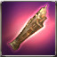

Pioneer Practice Leg-Guards
Available to equip above Lv. 1 - Recruitment character
The pioneer exclusive Leg-Guards pioneers can easily wield. As its purpose is only practice, their power is weak. [DEF +1]
Attributes
Rating: 5
ATK: 37
DEF: 1
ATK: 37
DEF: 1
 Ruby piece x1
Ruby piece x1 Cast iron x13
Cast iron x13 Etretanium x24
Etretanium x24 Refined Talt x24
Refined Talt x24 Fool Stone x1
Fool Stone x1 Ruby x1
Ruby x1 Composite steel x18
Composite steel x18 Silver Piece x24
Silver Piece x24 Refined Quartz x24
Refined Quartz x24 Refined Aidanium x24
Refined Aidanium x24 Royal sapphire x1
Royal sapphire x1 Bears nail x50
Bears nail x50 Well-groomed fur x25
Well-groomed fur x25 Silver metal x25
Silver metal x25 Royal ruby x1
Royal ruby x1 Elemental stone x1
Elemental stone x1 Melee Weapon Crystal - Lv 36 x2
Melee Weapon Crystal - Lv 36 x2 Elemental Jewel x50
Elemental Jewel x50 Forest Spirit x30
Forest Spirit x30 liquid of Heaven x3
liquid of Heaven x3 Drop of Sky x10
Drop of Sky x10 Red Ticket of Arsene Circus x1
Red Ticket of Arsene Circus x1 Enchantchip Lv 96 x20
Enchantchip Lv 96 x20 Archangel heart x1
Archangel heart x1 Seed of Yggdrasil x1
Seed of Yggdrasil x1 Seirens scale x1
Seirens scale x1 Shiny Crystal x300
Shiny Crystal x300 Dragon Heart x1
Dragon Heart x1 a lump of Gold x50
a lump of Gold x50 Ancient Rune - Te x50
Ancient Rune - Te x50 Star Stone x10
Star Stone x10 Wheel of Time x100
Wheel of Time x100 Armonias Holywater x10
Armonias Holywater x10 Moon Stone x5
Moon Stone x5 a lump of Platinum x3
a lump of Platinum x3 Symbol of Naraka x100
Symbol of Naraka x100 Arbremons Skin x50
Arbremons Skin x50 Devils Dream x100
Devils Dream x100 Pure Essence x1000
Pure Essence x1000 Fallen Essence x1000
Fallen Essence x1000 Balance Essence x1000
Balance Essence x1000 Warped weapon debris x1500
Warped weapon debris x1500 Symbol of DarkKnight x100
Symbol of DarkKnight x100 Symbol of HolyPriest x100
Symbol of HolyPriest x100 Armonium Ore - Blue x20
Armonium Ore - Blue x20 Armonia Token x200
Armonia Token x200 Symbol of Dark Shodow, G x200
Symbol of Dark Shodow, G x200 Symbol of Patrikyon x200
Symbol of Patrikyon x200 Silver Insignia of Patrikyon x100
Silver Insignia of Patrikyon x100 Shiny Sollarion x300
Shiny Sollarion x300 TimePiece : Rose x500
TimePiece : Rose x500 Vertrauen Symbol x1
Vertrauen Symbol x1 Star Essence x50
Star Essence x50 Armonium Ore - Black x10000
Armonium Ore - Black x10000 kryptonite x200
kryptonite x200